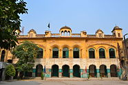

Faisalabad
Faisalabad, formerly (until 1979) Lyallpur, is a
city in the east-central Punjab province of
Pakistan,
in the Rechna Doab upland. When founded in 1890, it
was named for Sir Charles James Lyall, lieutenant
governor
of the Punjab. It became headquarters of the Lower
Chenab colony and in 1898 was incorporated as a
municipality. [14]
In September 1977, the city of Lyallpur was renamed
"Faisalabad" by the Government of Pakistan in honor
of King Faisal of
Saudi Arabia who had a great love for Pakistan and
its people.[15]
At the conclusion of the Second Anglo-Sikh War in
1849, the entire Punjab region became administered
as Punjab
province, firstly by the East India Company and
after 1858 as part of the British Raj.[25][26]
In the 1880s the Punjab government began an
irrigation scheme to cultivate large tracts of
western
Punjab through the creation of canal colonies.[27]
The Chenab colony was the largest of these
colonisation
projects, and covered the entirety of present-day
Faisalabad district. Popham Young, the Colonisation
Officer
managing the project identified the site of the
current city to establish headquarters for the
colony.[17][28]
In 1904, the new district of Lyallpur was created to
include the tehsils of Samundri and Toba
Tek Singh with a sub-tehsil at Jaranwala, which
later became a full tehsil in itself.[34] The
University of Agriculture, originally the Punjab
Agricultural College and Research Institute,
Lyallpur, was established in 1906.[16] The Town
Committee was upgraded to a Municipal Committee
in 1909. Lyallpur grew into an established
agricultural tool and grain centre.[35] By 1911 the
city had a population of 19,578.[17] The 1930s
brought industrial growth and market expansion
to the textile industry as well as to food
processing, grain crushing and chemicals.[18]
